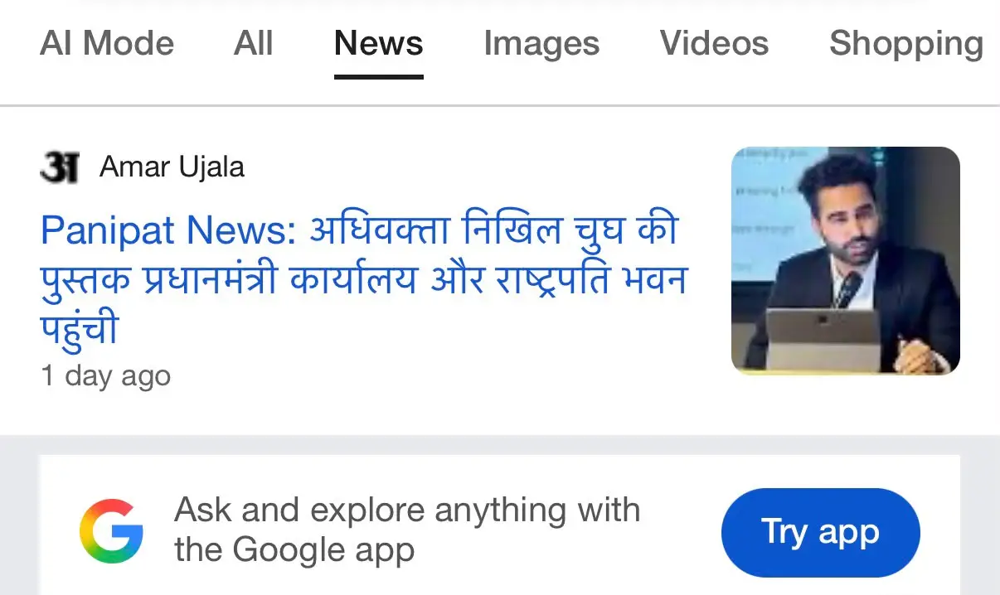
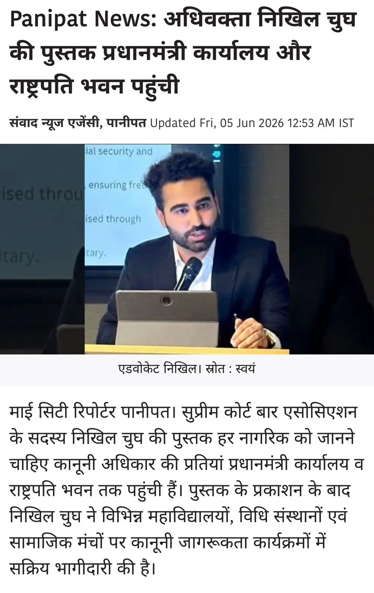
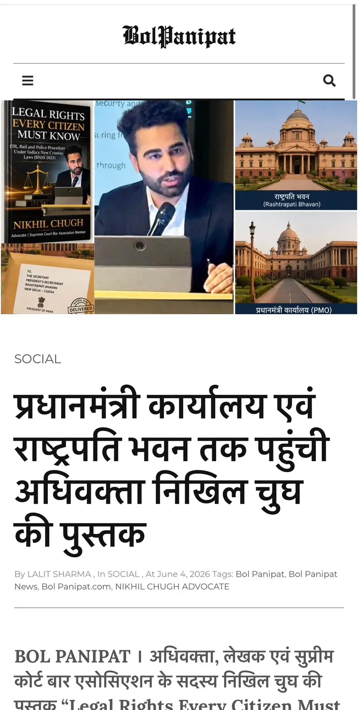
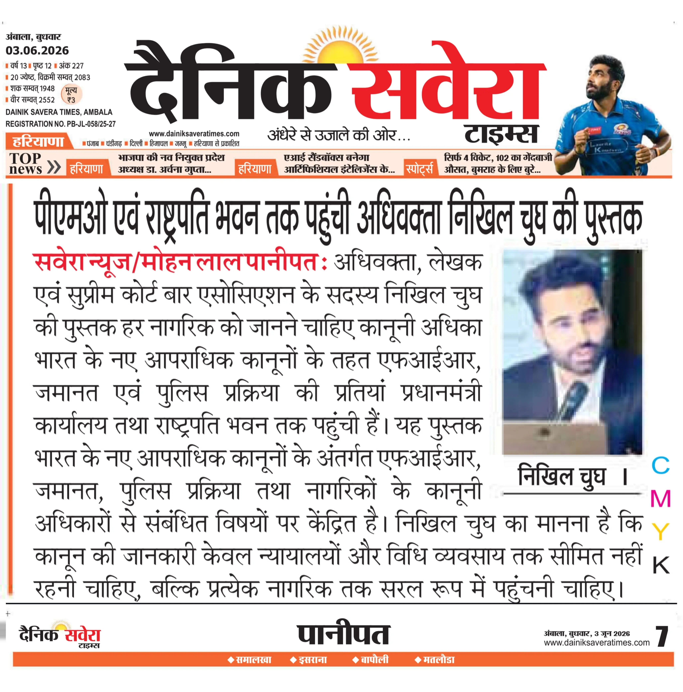
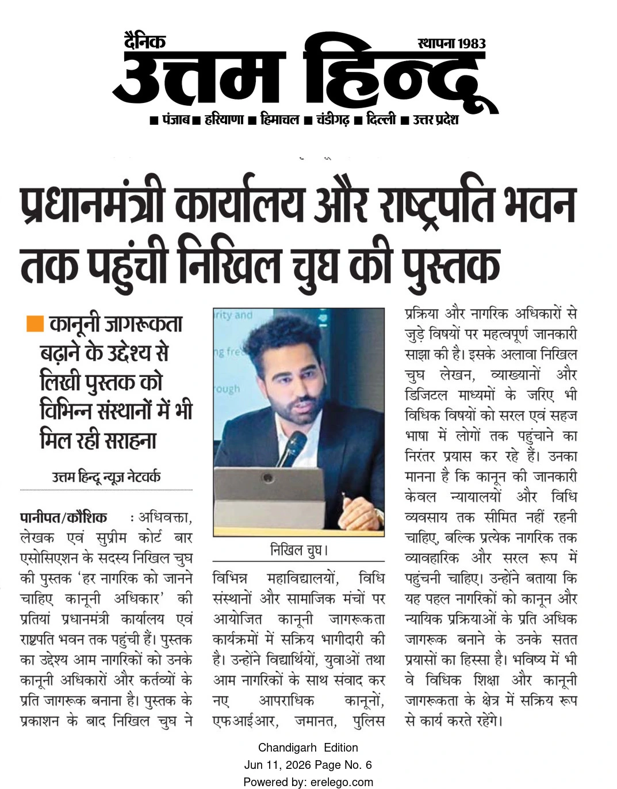
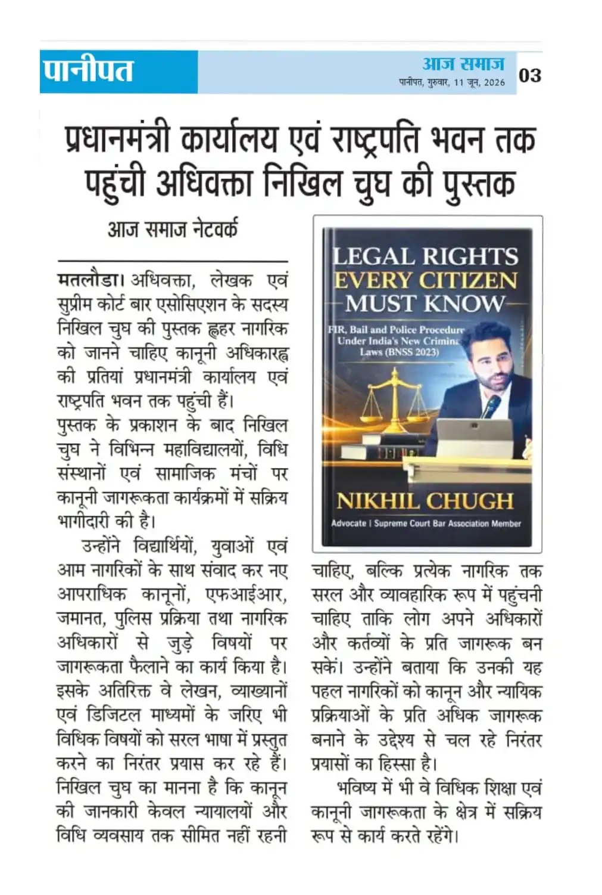
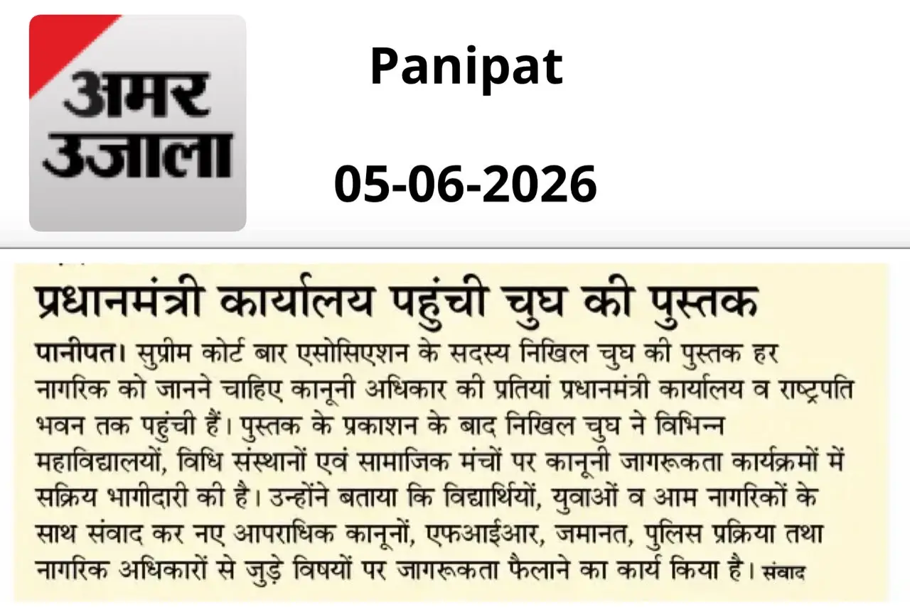

The legal awareness book authored by Advocate Nikhil Chugh titled “Legal Rights Every Citizen Must Know: FIR, Bail and Police Procedure Under India's New Criminal Laws (BNSS 2023)” received widespread media attention after reaching the Prime Minister's Office and Rashtrapati Bhavan.
Featured across leading newspapers and digital media platforms in June 2026.
The book explains FIR registration, arrest procedure, bail rights, police powers and constitutional safeguards under India's new criminal laws including the Bharatiya Nyaya Sanhita (BNS) and Bharatiya Nagarik Suraksha Sanhita (BNSS).







Coverage published by Amar Ujala, Dainik Savera, Uttam Hindu, Aaj Samaj and Bol Panipat regarding the reach of the legal awareness book to the Prime Minister's Office and Rashtrapati Bhavan.